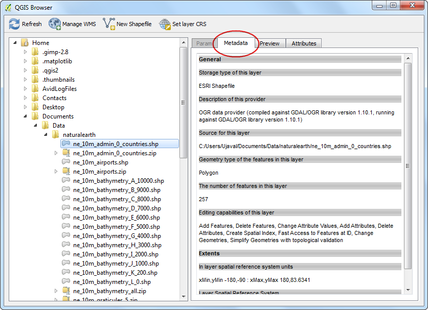
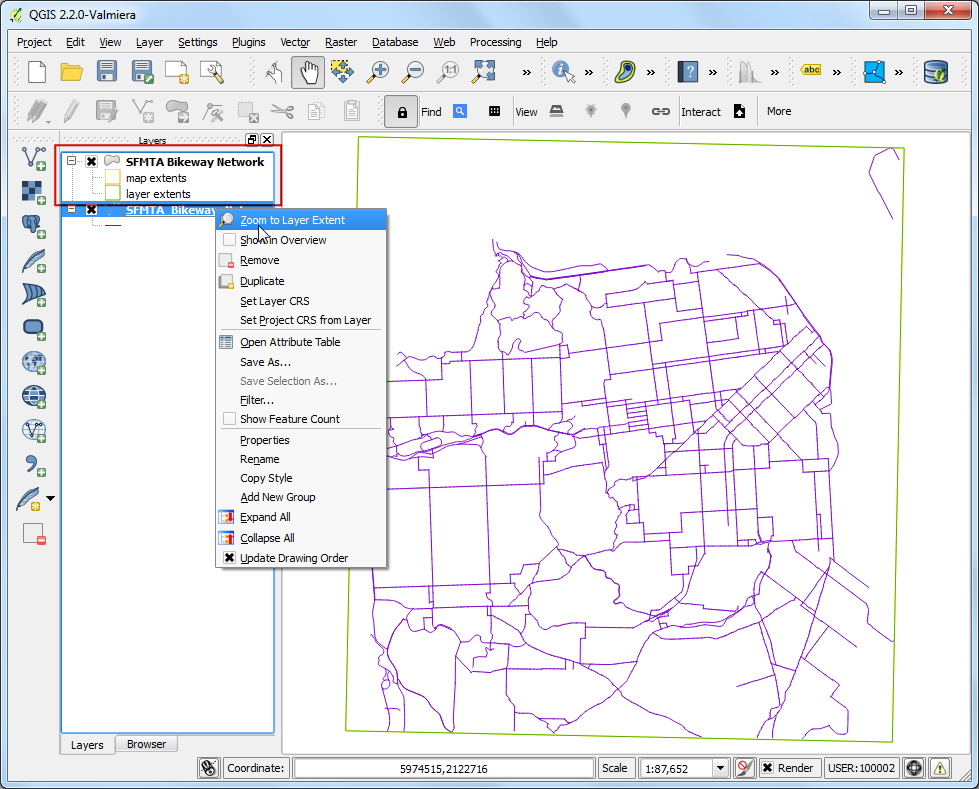

Χρήση του Google Maps Engine Connector για το QGIS
Warning
Από την 29η Ιανουαρίου του 2015, η μηχανή χαρτών της Google σταμάτησε την δημιουργία νέων δωρεάν λογαριασμών. Αν έχετε ήδη έναν λογαριασμό για το Map Engine τότε θα μπορείτε να δουλεύετε κανονικά μέχρι την 29η Ιανουαρίου του 2016
Το Google Maps Engine είναι μια cloud πλατφόρμα χαρτογράφησης για τη δημιουργία και το διαμοιρασμό χαρτών. Το Google Maps Engine Connector είναι ένα πρόσθετο που σας επιτρέπει να προβάλετε και να ανεβάσετε Google Maps Engine δεδομένα μέσα από το QGIS. Αυτό το tutorial, θα εξηγήσει τη διαδικασία δημιουργίας Google Maps Engine λογαριασμού, την εξασφάλιση των απαραίτητων διαπιστευτηρίων για τη χρήση του connector, τη δημιουργία ενός χάρτη με τη χρήση του Google Maps Engine και την ενσωμάτωση του χάρτη που προκύπτει στο QGIS.
Note
Δήλωση Άρνησης: Είμαι ο συγγραφές του Google Maps Engine Connector και προς το παρόν μέλος της ομάδας του Google Maps.
Επισκόπηση εργασίας
Θα πάρουμε ένα γραμμικό επίπεδο που αναπαριστά τους ποδηλατόδρομους στο San Francisco και θα το ανεβάσουμε στο Google Maps Engine χρησιμοποιώντας το πρόσθετο. Μόλις το επίπεδο έχει μορφοποιηθεί και ένας χάρτης έχει δημιουργηθεί, θα προσθέσουμε αυτόν τον χάρτη στο QGIS ως WMS επίπεδο.
Άλλες δεξιότητες που θα μάθετε
Δημιουργήστε έναν Google Maps Engine λογαριασμό
Μπορείτε να κάνετε έναν Google Maps Engine λογαριασμό για δωρεάν δοκιμή. Ο λογαριασμός αυτός έχει πλήρη Maps Engine χαρακτηριστικά, εκτός από το περιορισμένο ποσοστό αποθήκευσης. Επισκεφθείτε την ιστοσελίδα Google Maps Engine homepage και πατήστε τον σύνδεσμο Get started with a free account.

Θα χρειαστεί να συνδεθείτε στον λογαριασμό σας στη Google. Εάν θέλετε να χρησιμοποιήσετε το εργασιακό σας email, μπορείτε να δημιουργήσετε έναν νέο λογαριασμό Google με το εργασιακό σας email. Μόλις συνδεθείτε θα δείτε μια οθόνη Create a Maps Engine Project. Εισάγετε ένα Project Name το οποίο θα αναγνωρίζει τον λογαριασμό σας όταν χρησιμοποιείτε το Google Maps Engine. Αποδεχθείτε τους όρους και πατήστε το κουμπί Accept and create.

Δημιουργήστε ένα Google Developer Console έργο.
Το Google Maps Engine Connector χρησιμοποιεί το Google Maps Engine API για να αποκτήσει πρόσβαση στα δεδομένα που είναι αποθηκευμένα στο λογαριασμό σας. Θα χρειαστεί να εξασφαλίσετε ειδικά διαπιστευτήρια, τα οποία θα χρησιμοποιηθούν από το πρόσθετο, για να αποκτήσει προγραμματιστικά πρόσβαση στα δεδομένα σας. Επισκεφθείτε την ιστοσελίδα Google Developer Console και πατήστε το Create Project. Εισάγετε το GME Connector for QGIS API ως PROJECT NAME και το gme-qgis-api ως PROJECT ID. Αυτά τα ονόματα είναι μια πρόταση - μπορείτε να χρησιμοποιήσετε οποιοδήποτε όνομα και αναγνωριστικό θέλετε.

Μόλις δημιουργηθεί το έργο, πατήστε τον σύνδεσμο APIs & auth. Ανατρέξτε παρακάτω και βρείτε το Google Maps Engine API. Πατήστε το κουμπί OFF για να το αλλάξετε στο ON.

Στη συνέχεια, πατήστε τον σύνδεσμο Credentials. Πατήστε το CREATE NEW CLIEND ID που βρίσκετε στο τμήμα OAuth.

Στην περιοχή Create Client ID, επιλέξτε το Installed Application ως APPLICATION TYPE και το Other ως INSTALLED APPLICATION TYPE. Πατήστε Create Client ID.

Μόλις δημιουργηθεί η ταυτότητα του πελάτη, θα δείτε ένα νέο τμήμα που ονομάζεται Client ID for native application. Σημειώστε το Client ID και το Client secret. Αυτά είναι τα διαπιστευτήρια που θα χρειαστείτε για το QGIS.

Πίσω στο QGIS, πηγαίνετε στο . Βρείτε το πρόσθετο Google Maps Engine Connector και πατήστε Install plugin.

Μόλις εγκατασταθεί το πρόσθετο, θα δείτε μια νέα γραμμή εργαλείων στο QGIS. Αυτή η γραμμή εργαλείων περιέχει ποικίλα εργαλεία για να χρησιμοποιήσετε με το Google Maps Engine. Πατήστε το κουμπί More.

Στην καρτέλα Advanced Settings, εισάγετε το Client ID και το Client Secret που αποκτήσατε από το Google Developer Console. Πατήστε OK.

Εφόσον εισάγατε νέα API διαπιστευτήρια, θα σας ζητηθεί να συνδεθείτε και να εξουσιοδοτήσετε το πρόσθετο για να τα χρησιμοποιήσετε. Συνδεθείτε στο λογαριασμό σας στη Google.

Πατήστε Accept στην επόμενη οθόνη.

Αν όλα πήγαν καλά, θα εμφανιστεί ένα μήνυμα που να υποδεικνύει ότι συνδεθήκατε επιτυχώς.

Τώρα ας προσθέσουμε το επίπεδο SFMTA Δίκτυο Ποδηλατοδρόμων που είχαμε κατεβάσει νωρίτερα. Πηγαίνετε στο . Βρείτε το SFMTA_Bikeway_Network.zip αρχείο που κατεβάσατε και πατήστε Open. Επιλέξτε το επίπεδο SFMTA_Bikeway_Network.shp και πατήστε OK.

Ένα από τα χαρακτηριστικά του πρόσθετου του Google Maps Engine Connector είναι η δυνατότητα να ανεβάζετε σύνολα δεδομένων απευθείας από το QGIS. Επιλέξτε το SFMTA_Bikeway_Network επίπεδο και κάντε κλικ στο εικονίδιο Upload στη γραμμή εργαλείων.

Στο παράθυρο διαλόγου Upload a dataset to Google Maps Engine, εισάγετε μια περιγραφή του συνόλου δεδομένων στο Description. Μπορείτε να αφήσετε όλες τις άλλες επιλογές σε προεπιλογή. Πατήστε OK.

Το πρόσθετο θα χρησιμοποιήσει το Google Maps Engine API για να ανεβάσει το επίπεδο και να δημιουργήσει ένα Google Maps Engine Data Source. Μόλις τελειώσει το ανέβασμα, θα ανοίξει μια καρτέλα στο πρόγραμμα περιήγησης και θα σας οδηγήσει στη νέα πηγή δεδομένων.

Τα επόμενα βήματα θα παρουσιάσουν τη διαδικασία της δημιουργίας ενός χάρτη με τη χρήση του Google Maps Engine. Μόλις δημιουργηθεί ο χάρτης, θα αποκτήσουμε πρόσβαση στον χάρτη μέσω του πρόσθετου στο QGIS. Μόλις τελειώσει η επεξεργασία του διανυσματικού σας πίνακα, πατήστε Create styled layer.

Ονομάστε το επίπεδο ως SFMTA_Bikeway_Network και πατήστε Create.

Πατήστε Add rule για να προσθέσετε ένα προσαρμοσμένο στυλ για το επίπεδο.

Επιλέξτε το χρώμα και τις επιλογές ετικετών που βρίσκονται στο τμήμα Line style. Πατήστε Apply για να δείτε τις ρυθμίσεις μορφοποίησης εφαρμοσμένες στο επίπεδο σας. Μπορείτε επίσης να επιλέξετε την επιλογή No Basemap από την πάνω δεξιά γωνία, η οποία σας επιτρέπει να δείτε το επίπεδο σας χωρίς την βάση του χάρτη που βρίσκεται από κάτω. Μόλις μείνετε ικανοποιημένοι από τη μορφοποίηση, μεταβείτε στην καρτέλα Info windows.

Εδώ μπορείτε να διευκρινίσετε τι περιεχόμενο θα εμφανίζεται όταν κάποιος κάνει κλικ πάνω σε ένα σημείο στο χάρτη. Μπορείτε να αποκτήσετε πρόσβαση στα χαρακτηριστικά γνωρίσματα χρησιμοποιώντας την ένδειξη {attribute_name}. Σε αυτήν την περίπτωση, θέλουμε μόνο να εμφανίζεται το όνομα του δρόμου για το γνώρισμα της γραμμής. Εισάγετε τα παρακάτω στην περιοχή κειμένου. Πατήστε Apply και κάντε κλικ στο γνώρισμα της γραμμής πάνω στον χάρτη για να δοκιμάσετε τον κώδικα στο παράθυρο πληροφοριών. Μόλις τελειώσετε, τσεκάρετε το κουτάκι Publish on exit και πατήστε Exit.
<div class='googeb-info-window' style='font-family: sans-serif'>
{STREETNAME} {TYPE}
</div>

Πατήστε Add to map για να δημιουργήσετε έναν χάρτη με αυτό το επίπεδο.

Επιλέξτε Create new και εισάγετε SFMTA Bikeway Network ως Map title.

Θα δείτε έναν νέο χάρτη που θα περιλαμβάνει το νέο μορφοποιημένο επίπεδο. Έχετε μια επιλογή του να διαλέξετε διαφορετικές βάσεις χαρτών για τον χάρτη σας. Εφόσον αυτός είναι ένας ποδηλατικός χάρτης, μπορείτε να επιλέξετε το Terrain style basemap.

Πατήστε Publish map.

Μόλις δημοσιευτεί ο χάρτης, πατήστε το εικονίδιο Access links

Θα δείτε πολλούς τρόπους εμφάνισης, ενσωματώστε και προβάλετε το νέο χάρτη που μόλις δημιουργήθηκε. Εφόσον θα έχουμε πρόσβαση στον χάρτη μέσω του πρόσθετου του QGIS, δε χρειάζεστε καθόλου συνδέσμους από εδώ και πέρα.

Πίσω στο QGIS, πατήστε το εικονίδιο Search στη γραμμή εργαλείων.

Στο παράθυρο διαλόγου Maps Engine Maps, θα δείτε τον χάρτη σας στη λίστα. Πατήστε στη γραμμή για να το επιλέξετε. Πατήστε Add Selected to Map.

Το πρόσθετο θα εξετάσει το Google Maps Engine και θα φορτώσει ένα διανυσματικό επίπεδο που θα περιλαμβάνει το πλαίσιο οριοθέτησης του χάρτη. Εάν δε βλέπετε καθόλου δεδομένα στον καμβά, κάντε δεξί κλικ στο SFMTA_Bikeway_Network επίπεδο και επιλέξτε το Zoom to Layer Extent.

Πατήστε στο πλαίσιο οριοθέτησης του επιπέδου για να το επιλέξετε. Θα παρατηρήσετε ότι τα εργαλεία View είναι πλέον ενεργά. Πατήστε το εικονίδιο WMS Overlay στη γραμμή εργαλείων.

Στο παράθυρο διαλόγου Select A Layer to Add, επιλέξτε το SFMTA_Bikeway_Network επίπεδο και πατήστε το Add Selected to Map.

Ένα νέο WMS επίπεδο θα προστεθεί στο QGIS και θα δείτε το μορφοποιημένο επίπεδο σας από το Google Maps Engine να εμφανίζεται στο QGIS.

Ελπίζω αυτό το tutorial να δίνει μια επισκόπηση των δυνατοτήτων του πρόσθετου. Μπορείτε να επισκεφθείτε την ιστοσελίδα plugin homepage για να δείτε τον πηγαίο κώδικα και να μάθετε περισσότερα για το πρόσθετο.
Below is the Google Maps Engine map that was created for this tutorial.